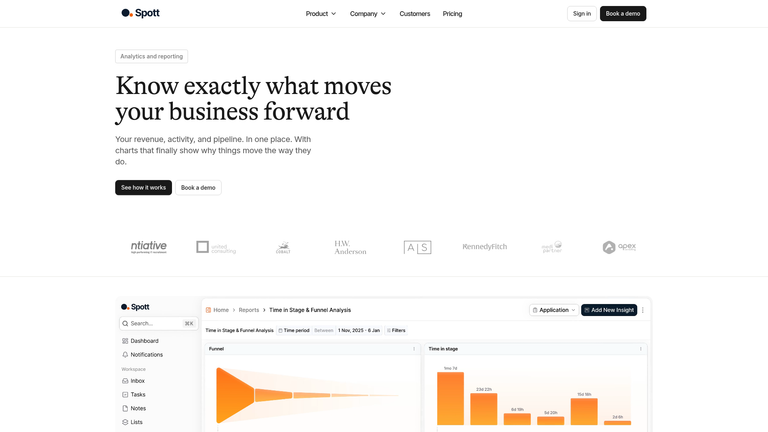
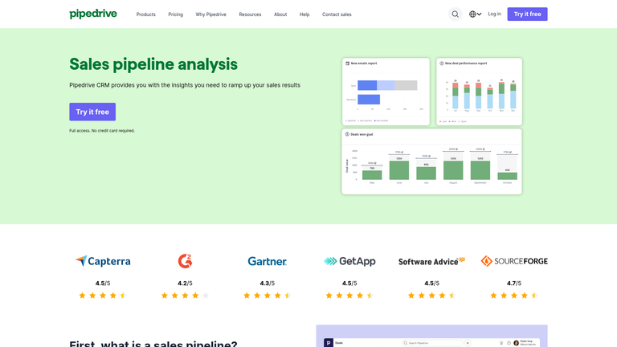
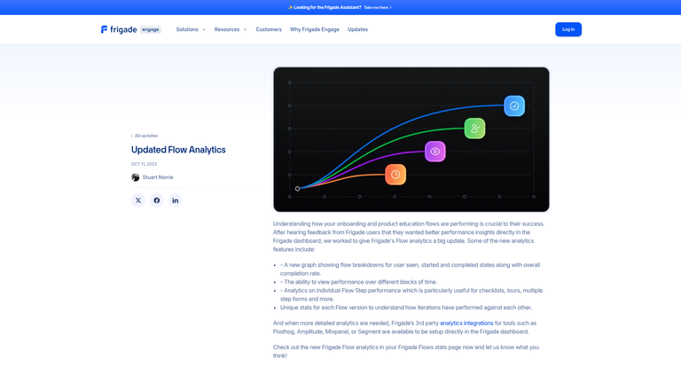
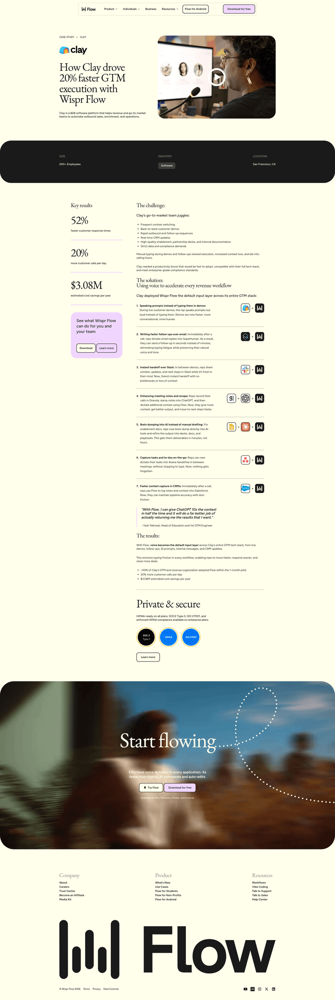

Design Improvement — Journey Flow
Apptics Customer Journey Platform · Sankey board · 2026-06-23
Current State
The board is split into a 3:2 grid — Sankey on the left, customer list on the right. On a real screen the chart only gets ~55% of the width, so columns collapse, ribbons overlap, and the later stages get pushed off-canvas. The drill-down list is a narrow scroller that wastes the right rail.
CURRENT (cramped) ┌───────────────────────────┬───────────────┐ │ Sankey (squished, scrolls)│ New Lead · 14 │ │ ▓▓▓▓ ▓▓▓ ▓▓ ... │ • Grace Liu │ │ │ • Diego R. │ │ │ • ...(scroll) │ └───────────────────────────┴───────────────┘
Improvement Ideas
1. Full-width Sankey + drill-down underneath ⭐ highest impact
Make the Sankey span the entire content width and grow taller (~520px). Move the selected-stage customer list to a full-width section below the chart, laid out as a responsive 2–3 column grid of customer cards instead of a narrow scroll list.

TARGET
┌─────────────────────────────────────────────┐
│ KPIs: 14 leads · 36% won · $82.5k │
├─────────────────────────────────────────────┤
│ S A N K E Y (full width, taller) │
│ New Lead ▓▓▓▓▓▓▓▓▓▓▓▓▓▓►Booked►GC►Met►Won │
│ └►No-show►Follow-ups │
├─────────────────────────────────────────────┤
│ ▸ New Lead · 14 $153,000 │
│ ┌────────┐ ┌────────┐ ┌────────┐ │
│ │Grace L.│ │Diego R.│ │Elena R.│ …grid │
│ └────────┘ └────────┘ └────────┘ │
└─────────────────────────────────────────────┘
2. KPI strip above the flow
Add a thin row of headline metrics (Total Leads, Conversion, Won value, No-shows) above the chart so the board leads with the numbers, then explains them with the flow.

3. Lead with drop-offs, not just the happy path
Keep the branch nodes (Never Booked, No-show → Follow-ups → Recovering/Lost) visually distinct — muted/red fills, pulled below the spine — so the eye lands on where people fall out, which is the whole point of a flow view.

4. Treat the drill-down as a panel with context, not a bare list
When a stage is selected, head the section with the stage name, count, and total deal value, then show customer cards with their source + current stage. Clay does this well: the flow visual up top, a metrics-rich rail with names, drop-off gaps and notes.

What's Working
- The Sankey concept is right — ribbon-thickness = customer count communicates the funnel instantly.
- Clean partitions — parent counts equal the sum of children, so the math is honest and ribbons are exact.
- Click-to-drill interaction — selecting a stage to reveal its customers is the correct model; it just needs more room.
- Themed stage colors carry across the whole app (badges, board, timeline) — keep that consistency.